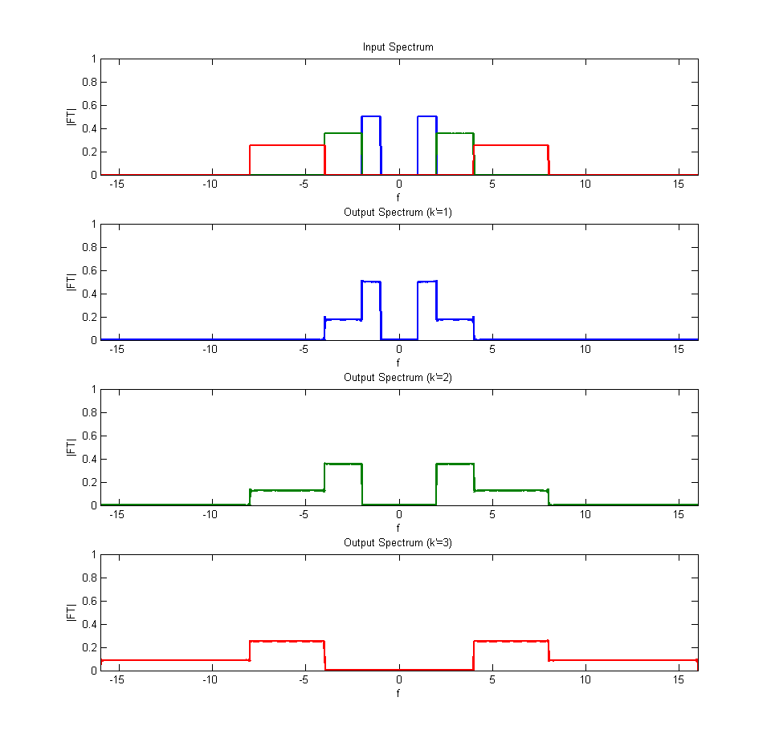
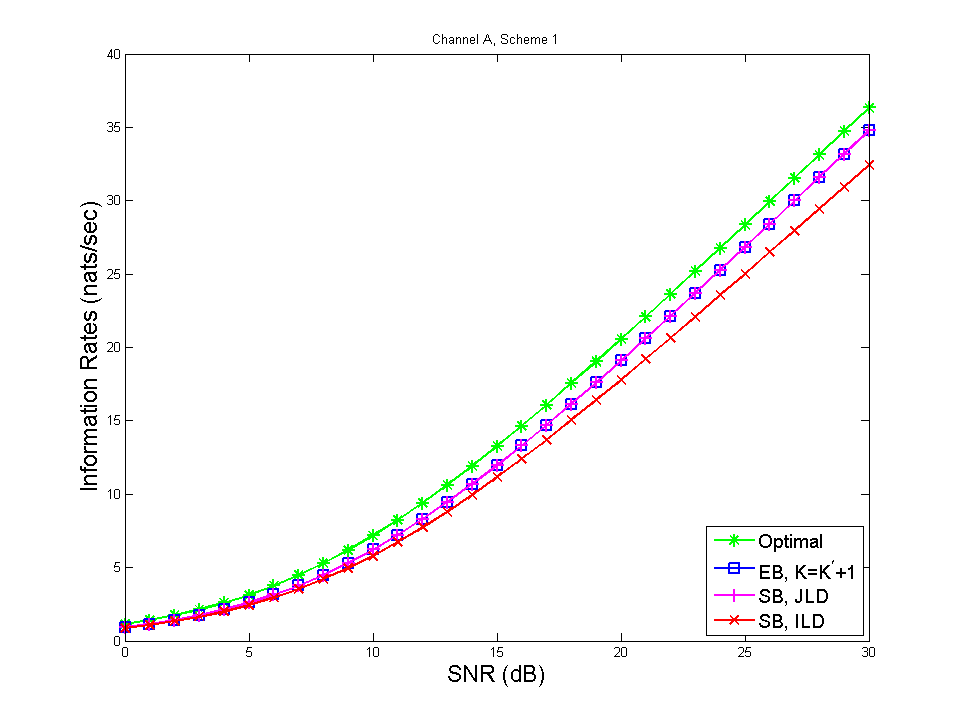
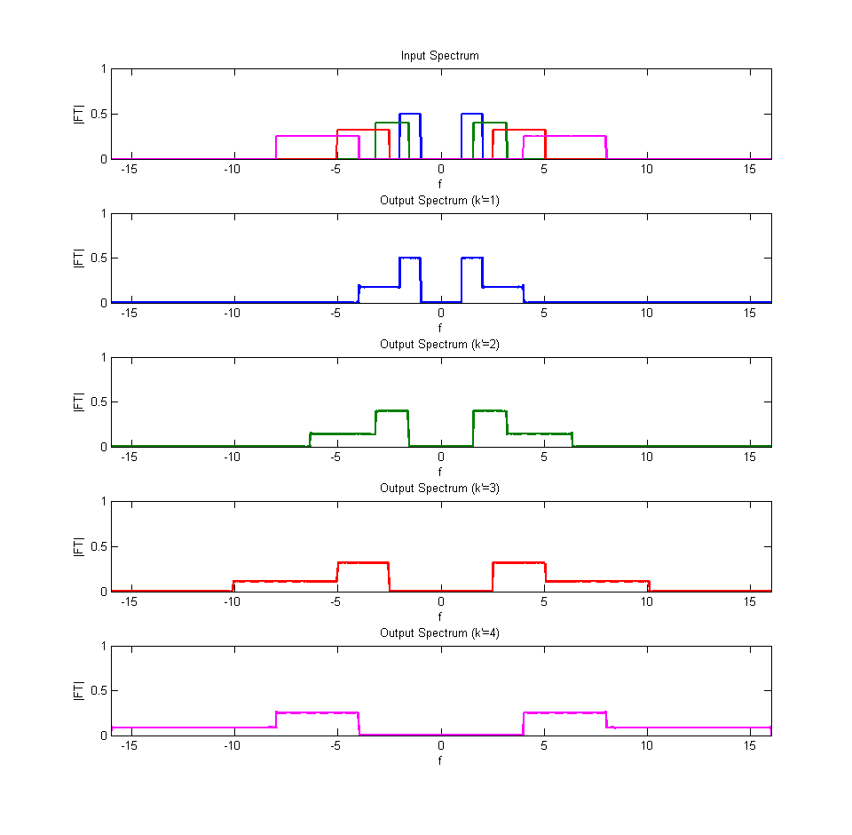
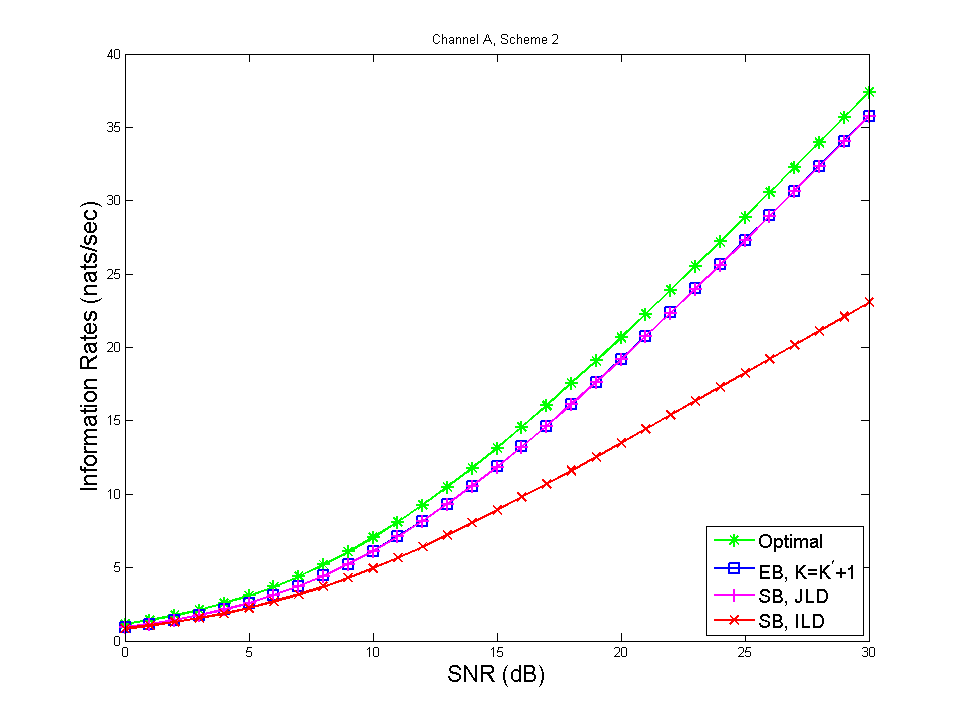
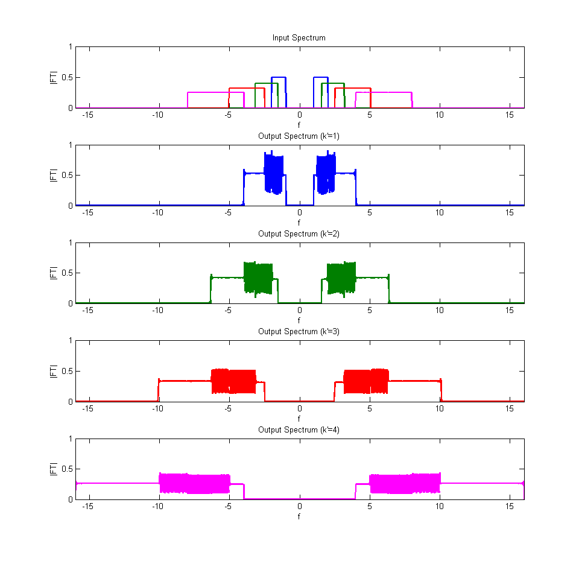
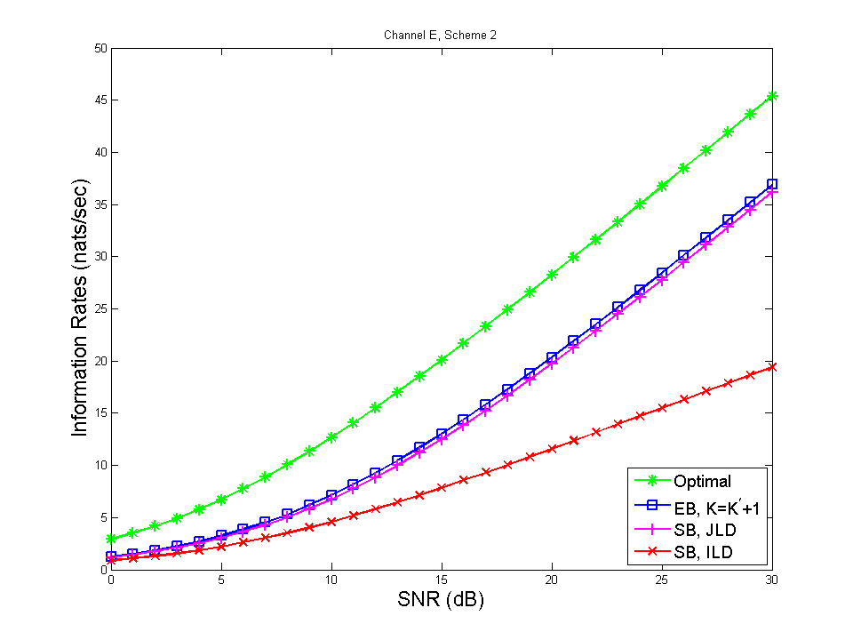

Simulations
Contents
Set Signal-to-Noise Ration (SNR)
SNRdB_vec = 0:30;
Channel A, Scheme 1
channel_index = 1;
scheme_index = 1;
multilayer(channel_index, scheme_index, SNRdB_vec)
Scheme parameters:
W = 1.000000, a = 2.000000, K^prime = 3
Generating transmitter matrix
Layer 1: 2x32 (real) symbols
Layer 2: 2x64 (real) symbols
Layer 3: 2x128 (real) symbols
f_min = 1.00000, f_max = 8.00000, B = 7.00000
Channel parameters:
N_paths = 2
h_wb = [1 0.5]
tau = [0 2]
alpha = [1 2]
Generating channel matrix
Generating receiver matrix
Layer 1: 2x34 (real) symbols
Layer 2: 2x68 (real) symbols
Layer 3: 2x136 (real) symbols
f_min = 1.00000, f_max = 8.00000, B = 7.00000
Layer 1: 2x34 (real) symbols
Layer 2: 2x68 (real) symbols
Layer 3: 2x136 (real) symbols
Layer 4: 2x272 (real) symbols
f_min = 1.00000, f_max = 16.00000, B = 15.00000
Computing rate for optimal receiver
(266.23 sec)
Computing rate for expanded band receiver
(125.62 sec)
Computing rate for same band receiver with joint layer decoding
(19.85 sec)
Computing rate for same band receiver with individual layer decoding
(18.46 sec)
Collecting results
Output saved to file: channela_scheme1_060314
Simulation runtime: 435.00 sec.
 
Channel A, Scheme 2
channel_index = 1;
scheme_index = 2;
multilayer(channel_index, scheme_index, SNRdB_vec)
Scheme parameters:
W = 1.000000, a = 1.587401, K^prime = 4
Generating transmitter matrix
Layer 1: 2x32 (real) symbols
Layer 2: 2x50 (real) symbols
Layer 3: 2x80 (real) symbols
Layer 4: 2x127 (real) symbols
f_min = 1.00000, f_max = 8.00000, B = 7.00000
Channel parameters:
N_paths = 2
h_wb = [1 0.5]
tau = [0 2]
alpha = [1 2]
Generating channel matrix
Generating receiver matrix
Layer 1: 2x34 (real) symbols
Layer 2: 2x53 (real) symbols
Layer 3: 2x85 (real) symbols
Layer 4: 2x135 (real) symbols
f_min = 1.00000, f_max = 8.00000, B = 7.00000
Layer 1: 2x34 (real) symbols
Layer 2: 2x53 (real) symbols
Layer 3: 2x85 (real) symbols
Layer 4: 2x135 (real) symbols
Layer 5: 2x215 (real) symbols
f_min = 1.00000, f_max = 12.69921, B = 11.69921
Computing rate for optimal receiver
(248.44 sec)
Computing rate for expanded band receiver
(91.04 sec)
Computing rate for same band receiver with joint layer decoding
(31.93 sec)
Computing rate for same band receiver with individual layer decoding
(16.82 sec)
Collecting results
Output saved to file: channela_scheme2_061007
Simulation runtime: 398.35 sec.
 
Channel E, Scheme 2
channel_index = 5;
scheme_index = 2;
multilayer(channel_index, scheme_index, SNRdB_vec)
Scheme parameters:
W = 1.000000, a = 1.587401, K^prime = 4
Generating transmitter matrix
Layer 1: 2x32 (real) symbols
Layer 2: 2x50 (real) symbols
Layer 3: 2x80 (real) symbols
Layer 4: 2x127 (real) symbols
f_min = 1.00000, f_max = 8.00000, B = 7.00000
Channel parameters:
N_paths = 3
h_wb = [1 -0.7 1.5]
tau = [2 1 3]
alpha = [1 1.25 2]
Generating channel matrix
Generating receiver matrix
Layer 1: 2x35 (real) symbols
Layer 2: 2x55 (real) symbols
Layer 3: 2x88 (real) symbols
Layer 4: 2x139 (real) symbols
f_min = 1.00000, f_max = 8.00000, B = 7.00000
Layer 1: 2x35 (real) symbols
Layer 2: 2x55 (real) symbols
Layer 3: 2x88 (real) symbols
Layer 4: 2x139 (real) symbols
Layer 5: 2x222 (real) symbols
f_min = 1.00000, f_max = 12.69921, B = 11.69921
Computing rate for optimal receiver
(212.05 sec)
Computing rate for expanded band receiver
(89.68 sec)
Computing rate for same band receiver with joint layer decoding
(31.64 sec)
Computing rate for same band receiver with individual layer decoding
(18.08 sec)
Collecting results
Output saved to file: channele_scheme2_061614
Simulation runtime: 362.38 sec.
 